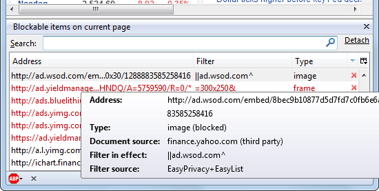

Getting "net::ERR_BLOCKED_BY_CLIENT" error on some AJAX calls
Recently I've realised that, some adblocker extensions (such as adBlocker plus) block some Ajax calls. I get that error on the console:
GET http://localhost/prj/conn.php?q=users/list/ net::ERR_BLOCKED_BY_CLIENT
Why does it block some Ajax call but not the others and what causes that? Is there any workaround other than telling user to turn off adblocker?
Answer
AdBlockers usually have some rules, i.e. they match the URIs against some type of expression (sometimes they also match the DOM against expressions, not that this matters in this case).
Having rules and expressions that just operate on a tiny bit of text (the URI) is prone to create some false-positives...
Besides instructing your users to disable their extensions (at least on your site) you can also get the extension and test which of the rules/expressions blocked your stuff, provided the extension provides enough details about that. Once you identified the culprit, you can either try to avoid triggering the rule by using different URIs, report the rule as incorrect or overly-broad to the team that created it, or both. Check the docs for a particular add-on on how to do that.
For example, AdBlock Plus has a Blockable items view that shows all blocked items on a page and the rules that triggered the block. And those items also including XHR requests.

Suggest
If your URL contains words such as "advert", "ad", "doubleclick", "click", or something similar…
For example:
GET googleads.g.doubleclick.net/pagead/idstatic.doubleclick.net/instream/ad_status.js
…Then ad-blocker will block it.